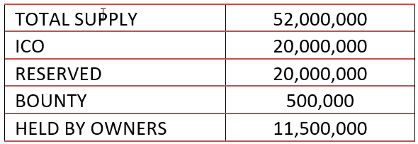

The whitepaper in front of you represents an effort by Pcore team to establish a trustworthy
marketplace for companies to buy, sell, and maintain invoice-related investments. The online
platform uses blockchain technology to power up all transactions, ensures security, all the while
providing necessary privacy for organizations.
Due to the issues that mainstream markets face when invoice factoring is in question, we plan to
implement Hive and smart contract systems that build up transparent blockchain ledger records.
Through blockchain, we aim to create a safe haven for both invoice sellers and investors. We also
provide “cover” services, which will secure funds of both sellers and buyers within our platform.
The Hive, Altman Z-score, smart contracts, and other technological components serve as tools for
identity verification, upholding highest security standards in the industry. Thus, we aim to
scrutinize all companies involved before transactions even take place within our online platform.
The invoice processing takes up measurements or risk factoring, interest gained for investors, and
even pool investment. The main currency of trade within the platform shall be Pcore token, tradable
for any other fiat currency in the market. Additionally, we plan to establish partnership deals
with major crypto exchanges to smooth out transactions outside the Pcore platform.
In order to build up an online marketplace, we intend to release an ICO that would allow us to
build up necessary operations, hire professionals, and set up support office within the UK. The
total supply stands at 52 million Pcore tokens, including 20 million designated for the crypto
crowdfunding.
The world of business was and shall remain quite complex, what with technological advancement.
Operational processes develop at an unprecedented rate, involving even more chess pieces than ever
before. Competition is fierce while customers are demanding quality and attractive price programs.
These programs rely on invoice financing more than ever before, to attract a larger number of
potential customers.
Invoice financing (A/R), as a term, is nothing new in the business world, as it allows steady
revenue flow for companies. It is a form of a contract between buyer and seller, where the customer
has an option of paying for goods at later date. Usually, 30, 60, or 90-day notice provides the
buyer a chance to pick up the chosen goods or services while the company enjoys stabilized income
over a period of time. However, once the deal is made, the business in question also suffers in
terms of liquidity, as it can only collect the debt at later date.
At the same time, the emergence of blockchain technology came with rising interest from
organizations all over the globe. Decentralized networks, globalized cryptocurrencies, and smart
contracts all have their own role to play. However, probably the most distinguished feature that
blockchain offers is the security of transfers. The system itself, through smart contracts, has the
ability to improve the integrity of transactions, guaranteeing that all parties should act on their
promises for transfer to take place.
Hence, we at Pcore Ltd. offer a market that can significantly improve the liquidity of our business
customers. Through the blockchain network, developed by our team, we offer a marketplace where
receivable invoices can be sold securely. The platform enables businesses to connect, upload, and
trade invoices, improving the liquidity rate of companies while providing a good investment ground
for companies that seek safe funding projects.
Both sides have numerous advantages to speak of when trading invoices at the Pcore platform.
Companies selling them would increase their immediate funding capabilities, needed to buy
materials, pay for the production of goods, or even to pay their employees’ salaries. Buyers
(lenders henceforth), on the other hand, can earn profit from the credible commercial business.
Through finance of receivables, lenders earn interest as a profit. The most important criteria to
meet is thus trustworthiness of partners, making the factoring the perfect solution.
The entire marketplace is powered-up by blockchain technology, including smart contracts that
provide a safe environment for both invoice buyers and sellers. We also offer a token called
[nameoftoken] as a medium of payment, where its value is pegged to British Pound (GBP) on 1:1
basis.
With the global market in mind, we plan to offer a secure platform where lenders and businesses can
meet and conduct transactions using our blockchain-based services. The Whitepaper shall present in
detail how smart contracts work, what are the latest market trends regarding the invoice, and the
fundraiser (Initial Coin Offering – ICO) roadmap that will assist us in achieving our goals.
Pcore blockchain (distributed ledger) technology applies smart contracts to assign a unique
fingerprint for every transaction. This makes it possible for businesses to automate their
invoicing processes and take advantage of factoring services on the platform. Serving as a medium,
Pcore ensures the safety of all parties’ funds while supplying the market space for business
conduction. Each account has a unique record, transparently shown for all participants. Thus,
through transparency, creditworthiness can be established through the blockchain platform.
Pcore is an end-to-end platform that will provide SMEs easy access to short-term financing by
turning their accounts receivables into tradable assets. With a 24-hour turnaround available, the
interest rates allow lenders to earn profits while sellers gain vitally important liquidity for
their daily operations.
The Pcore platform supports issuers, owners, and payers. Invoices can, therefore, be made available
as a shared source of liquidity for factoring. Uploading the income date, lenders would have the
option to choose the length of factoring and interest rate involved through smart contracts. Tokens
would connect parties from around the globe, disregarding borders in the process.
However, only the firm itself or the recipient of the invoice can grant access to detailed
financial data about a specific company or invoice. This enables real-time auditing to be
conducted, improves the credit scoring process, and expedites credit approvals. Those companies
with a positive credit history will attract lenders with more ease while incentives and will be
available for use within their operations. The algorithm is based on companies XBRL data and risk
scoring results.
We base our business on real-life issues that exist in various industries. Thus, the Pcore model
aims to solve obstacles that modern-day companies face when dealing with liquidity and financial
uncertainty. The main issues that plague numerous markets for some on regular bases are financial
constraints &factoring, invoice verification, as well as non-transparent/outdated financial
reports.
As a presentation format of financial data within the platform, we opted for XBRL (eXtensible
Business Reporting Language). The framework represents an open international standard for digital
business reporting. It is used around the world, with companies from more than 50 countries
implementing it within their operations. Millions of XBRL documents are created every year,
replacing older, paper-based reports with useful, effective, and more accurate digital reports.
In other words, XBRL provides a language in which reporting terms can be clearly defined. In turn,
terms can then be used to uniquely represent the contents of financial statements or other kinds of
compliance, performance, and business reports. XBRL is often called “bar codes for reporting”, as
it makes reporting more accurate and efficient. With unique tags, XBRL allows Pcore to develop its
platform according to sophisticated market needs, providing:
• usable reporting documents that can automatically be registered, sorted and analyzed by Pcore
• general trust that all reports within the platform follow up sophisticated, pre-defined
definitions
Additionally, comprehensive definitions and accurate data tags would assist parties to conduct
various reporting tasks, including:
• preparation
• validation
• publication
• exchange
• consumption
• risk and performance analysis of business information.
To enable the exchange of summary business reports, XBRL enforces transaction tags within the
platform. These transactional representations allow system-independent exchange and analysis of
large quantities of supporting data. Thus, as the key towards financial reporting transformation,
Pcore platform uses two core calculations to support investors in the evaluation of investment
opportunity. These two calculations include:
1. Opportunity Qualification and Risk Assessment
2. Predictive Behavior Credit Scoring with Artificial Intelligence
For the purpose of the general financial health check, our income statement relies heavily on the
user base. Due to the novelty of the idea, we expect that the number of clients will grow steadily
in the future, which is reflected in our financial report. Detailed income statement can be found
in Appendix A while user-base growth table on Appendix B.
Our financial model relies on several streams of revenues, upon which we have built our
expectations. Namely, we evaluated invoices from sellers at £5,000. We take into account that 20
out of 100 users would opt for “cover” services, out of which 20 users that have taken cover 5
would not meet payments due date. Thus, we have 20% revenues obtained through commissions and fees
related to “cover” transactions.
Additionally, as we expect year 1 to be the period of investment, there are important milestones
and facts that we need to address. These include:
Technology year 1 includes construction of UK-based site, while year 2 consists of updating the UK
platform and construction of Chinese online platform
The Pcore cover payout is for invoices that have been covering by the score. The seller cannot
retrieve payment in time reasoning in payout to investors
Commission 2% for using invoice selling platform
Pcore cover where seller chooses to use invoice cover. Charge percentage depends on the overall
invoice value
Pcore cover payout return is for invoices that have opted for cover and invoice seller returns
Pcore Interested 8% represents interest gained from overdue invoice cover payment
Monthly Fee charge is reserved only for the Chinese platform, with a launch planned on the 4th
month of year 2
We expect sharp incline of net income at the end of the second year of operations, with both UK and
China markets contributing to growth. The overall income surge we expect stands at 368%, driven by
the increased number of clients and P2P transactions. Furthermore, we expect a yearly increase in
net income between 500% and 1,000% by the end of year 6, when compared to year 2.
Whereas fixed costs remain stable, due to the increased number of clients, variable costs, Cover
Payout expenses especially, will grow proportionately. Thus, it is no wonder that variable costs
will overgrow fixed expenses by the end of the second year.
However, we do have cost efficiency plans to contain the cost per user, in order to bring forth
income as promised. Thus, we plan to implement heavy scrutinization management systems that would
allow us to keep “cover” expenses at the required level, with a minimum amount of defaults and bad
debt as possible.
On the side of revenues, the main income drive remains to be “Cover” score revenues, constituting
almost 64% of our entire revenue figures for both years. The said income channel is heavily reliant
on the user base, which we expect to grow substantially, especially after the penetration of the
Chinese market.
ON the side of users, as we increase our marketing expenditure and further penetrate the UK an
Chinese markets, we expect sharp incline of newly registered accounts. Thus, the expected growth
rate for year 2 stands at 604%, mainly due to the opening of the Chinese market.
We took into consideration that, although China’s marketplace would be larger, the overall revenue
power of Chinese clients is lower. Thus, our model takes into consideration lower revenues, even
though a larger number of users would come from China.
Lastly, funds will be used for 50% buyback of Pcore coin, which will be burned upon the purchase,
to keep the market flowing seamlessly. We shall repeat the process until the entire market holds 1M
Pcore PCC coin in circulation. Thus, we plan to achieve 1 million token markets by between years 4
and 5.
With Brexit heavily in minds of UK citizens and business alike, we strived to conduct an accurate
analysis of the situation. As it turns out, for invoice factoring, we see Brexit HYPERLINK
"https://www.theweek.co.uk/brexit-0" HYPERLINK "https://www.theweek.co.uk/brexit-0" HYPERLINK
"https://www.theweek.co.uk/brexit-0" as a chance and not as an obstacle at this moment. The
economic power of the United Kingdom should not be underestimated, while Brexit opens the door of
non-EU countries to sign trade deals.
Thus, our second largest market, after the UK, would be China. The Pcore limited expansion team
will look to establish a worthy partnership across the Asian country, which is seen as the fastest
growing economy in the world. The number of large businesses in various industries speaks that the
country is a good source of revenues, especially since overseas invoice factoring might be quite
attractive for expanding Chinese investors.
Currently, China has a labor force of more than 800 million, while exports account for $2.5
trillion, mainly to Europe and the US despite the trading war going on. With Apple leading the
example, most of the largest companies in the world are of Chinese background or have large
production units in the country. Thus, many of the smaller and medium-sized service companies exist
that support enterprises and large population.
The real value that our platform can provide for Chinese companies lies in the fact that the
Chinese market is in the expansion. Companies coming from the Asian market will have the
opportunity to reach for invoices outside of their borders, using domestic currency to obtain Pcore
coins. Without investments into marketing, investigation of new markets, and other expenses, both
Chinese and European companies stand to gain from the P2P invoice factoring, excluding large
investments to do so.
Additionally, China’s companies will be able to benefit from the know-how that the Pcore team shall
provide, in terms of data validation, profit analysis, and security measures. Pcore we charge a
monthly fee for invoice sellers with a 2% commission on platform sold invoices.
Main benefits of including China as our target market expansion plans consist of:
1) China firm will be able to send manufactured products after providing details to credible
Europe/U.K. clients
2) Chinese companies will be able to forward invoices after the delivery of services/goods to Pcore
auction platform and free up funds at a discount price
3) Help connect China and U.K./Europe trading partners. New trading partners from Europe U.K. will
be able to receive good/products without upfront payments. Thus, the platform will help to build
trust and enable both parties to flourish
Since our platform completely relies on the blockchain technology, it is important to mention its
features that we wish to implement within the Pcore invoice platform. These include smart contracts
& public ledger, and smart oracles.
In order to accommodate the growing number of users and thus, documents, we implemented the Hive
ecosystem within our Pcore platform. The blockchain-based solutions atomize the verification of
identity and legitimacy of submitted documents, without the interference of the centralized system.
Within the Pcore site, Hive system would navigate through documents submitted of the business, the
username, passwords, as well as invoice facts and data.
The Hive architecture uses Personally Identifiable Information (PII) protocols that recognize
off-ledger data, including terms, numbers, and even images. This will allow the Pcore platform to
keep data secured through Hive Vendors, as it also implements preset rules on information sharing.
AS reputation is important, the Hive architecture also takes into consideration “cover” scores, as
well as fee programs associated with each individual invoice and user. The Customer Due Diligence
process contains a set of requirements that each client, buyer, and seller alike, should contain.
Thus, we intend to atomize our verification process through the implementation of Hive ecosystem.
Taking into account business development, we planned out an Initial coin Offering (ICO) as a channel
of funding to build the necessary infrastructure for the Pcore invoice factoring platform. Using
blockchain technology, we aim to build complete service and support teams that would carry out the
necessary tasks of constructing, maintaining, and supporting the online marketplace.
The funds gained through the ICO would allow us to fund necessary operational activities, such as
company offices, develop the trading platform, higher domestic and foreign professionals. At the
starting stage, the only available currency shall be Pcore token, used for payments, fees,
withdrawals, and deposits.
Should ICO commence successfully, the infrastructure would be developed within 2019, setting off
the platform in a timely manner. Additionally, part of the pre-mined Pcore coins will serve as a
reserve and bounty, while another portion will be held by the management team to ensure scaling
opportunities.
As the market grows, we intend to list the token in external exchanges, to increase possible
options for clients from around the globe. Thus, as a final stage, we intend to make core token
tradable with any fiat currency in the world and attract top-notch companies to trade invoices
within our platform.
Below is the planned supply of Pcore tokens:
